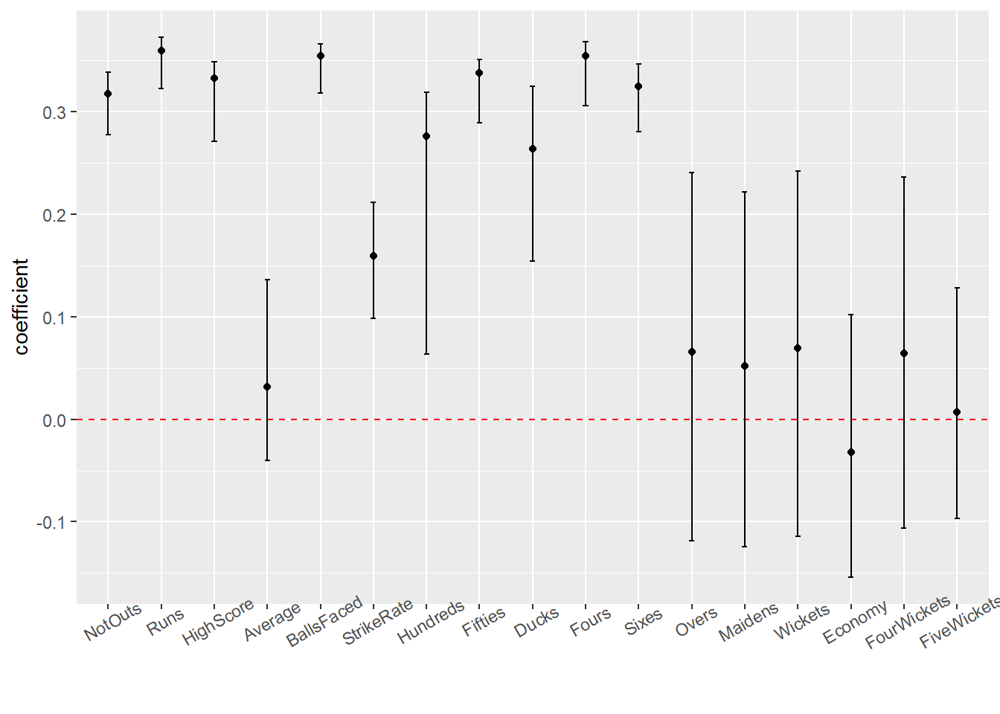
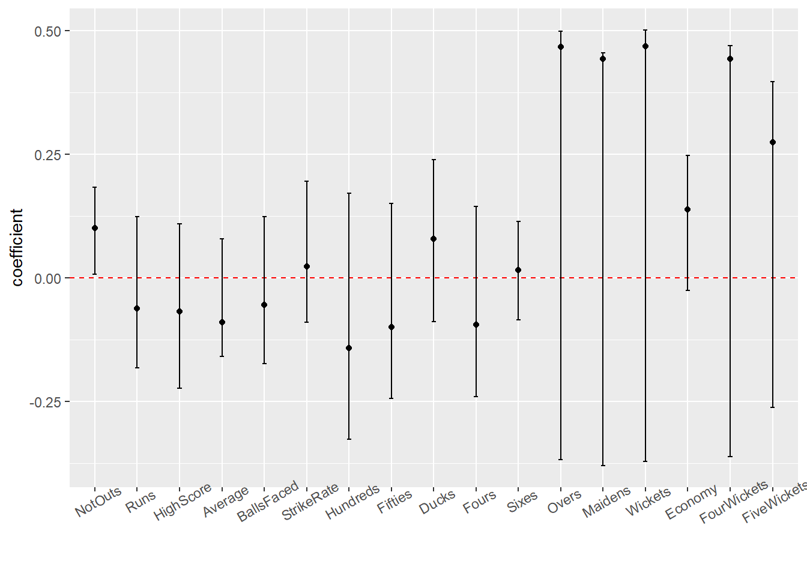
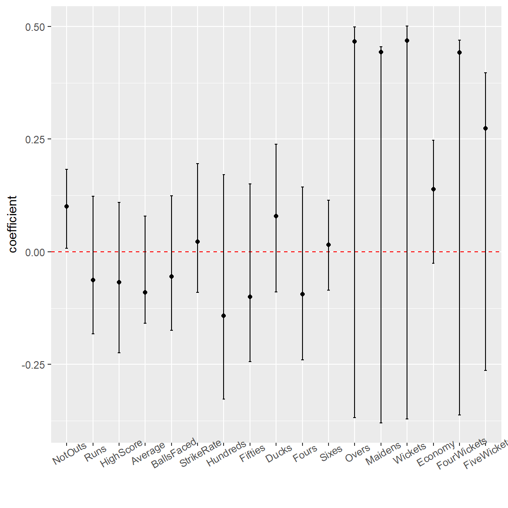

library(tidyverse)
library(boot)
library(kableExtra)ETC3250/5250 Assignment 2
Exercises
1. Bootstrapping your way to provide evidence (8pts)
In this question, we are interested in bootstrapping the variables from NotOut to FiveWickets to find the statistics that are contributing to PC1.
| var | q2.5 | q5 | q97.5 | observed_value |
|---|---|---|---|---|
| NotOuts | 0.28 | 0.31 | 0.34 | 0.32 |
| Runs | 0.32 | 0.35 | 0.37 | 0.36 |
| HighScore | 0.27 | 0.33 | 0.35 | 0.33 |
| Average | -0.04 | 0.04 | 0.14 | 0.03 |
| BallsFaced | 0.32 | 0.35 | 0.37 | 0.35 |
| StrikeRate | 0.10 | 0.16 | 0.21 | 0.16 |
| Hundreds | 0.06 | 0.27 | 0.32 | 0.28 |
| Fifties | 0.29 | 0.33 | 0.35 | 0.34 |
| Ducks | 0.15 | 0.26 | 0.32 | 0.26 |
| Fours | 0.31 | 0.35 | 0.37 | 0.35 |
| Sixes | 0.28 | 0.32 | 0.35 | 0.32 |
| Overs | -0.12 | 0.05 | 0.24 | 0.07 |
| Maidens | -0.12 | 0.04 | 0.22 | 0.05 |
| Wickets | -0.11 | 0.06 | 0.24 | 0.07 |
| Economy | -0.15 | -0.03 | 0.10 | -0.03 |
| FourWickets | -0.11 | 0.05 | 0.24 | 0.06 |
| FiveWickets | -0.10 | -0.01 | 0.13 | 0.01 |

In Figure 1, Confidence intervals for Average, Overs, Maidens, Wickets, Economy, FourWickets and FiveWickets cross ZERO, hence zero is a plausible value for the population coefficient corresponding to this estimate. This also means that the variance in these variables cannot be effectively explained by PC1. On the other hand, we see that rest other variables such as Runs, HighScore, BallsFaced and so on are the terms related to battling in a cricket match. The variance in these variables seem to be explained by PC1.
We are interested in bootstrapping the variables from NotOut to FiveWickets to find the statistics that are contributing to PC2.
| var | q2.5 | q5 | q97.5 | estimate |
|---|---|---|---|---|
| NotOuts | 0.01 | 0.10 | 0.18 | 0.10 |
| Runs | -0.18 | -0.05 | 0.12 | -0.06 |
| HighScore | -0.22 | -0.05 | 0.11 | -0.07 |
| Average | -0.16 | -0.09 | 0.08 | -0.09 |
| BallsFaced | -0.17 | -0.04 | 0.12 | -0.05 |
| StrikeRate | -0.09 | 0.03 | 0.20 | 0.02 |
| Hundreds | -0.33 | -0.12 | 0.17 | -0.14 |
| Fifties | -0.24 | -0.08 | 0.15 | -0.10 |
| Ducks | -0.09 | 0.10 | 0.24 | 0.08 |
| Fours | -0.24 | -0.08 | 0.14 | -0.09 |
| Sixes | -0.09 | 0.02 | 0.11 | 0.02 |
| Overs | -0.37 | 0.46 | 0.50 | 0.47 |
| Maidens | -0.38 | 0.43 | 0.46 | 0.44 |
| Wickets | -0.37 | 0.46 | 0.50 | 0.47 |
| Economy | -0.03 | 0.13 | 0.25 | 0.14 |
| FourWickets | -0.36 | 0.43 | 0.47 | 0.44 |
| FiveWickets | -0.26 | 0.27 | 0.40 | 0.27 |

In Figure 2, Confidence intervals for all the variables except NotOuts cross ZERO, hence zero is a plausible value for the population coefficient corresponding to this estimate. This also means that almost none of the variance in coefficients can be explained by PC2 which wasn not the case previously. Earlier we were able to explain the variables related to bowling in a cricket match but upon sampling the data 1000 times using bootstrapping, it seems that that was the case for just 1 or few such samples and not for all samples as assumed previously

2. How is your thinking about simple classifiers? (10pts)
YOUR ANSWER HERE
3. How well can you build a simple classifier? (18pts)
YOUR ANSWER HERE
References
Hadley Wickham, Dianne Cook, Heike Hofmann, Andreas Buja (2011). tourr: An R Package for Exploring Multivariate Data with Projections. Journal of Statistical Software, 40(2), 1-18. URL http://www.jstatsoft.org/v40/i02/.
Kuhn et al., (2020). Tidymodels: a collection of packages for modeling and machine learning using tidyverse principles. https://www.tidymodels.org
OpenAI (2023). ChatGPT (version 3.5) [Large language model]. https://chat.openai.com/chat, full script of conversation here